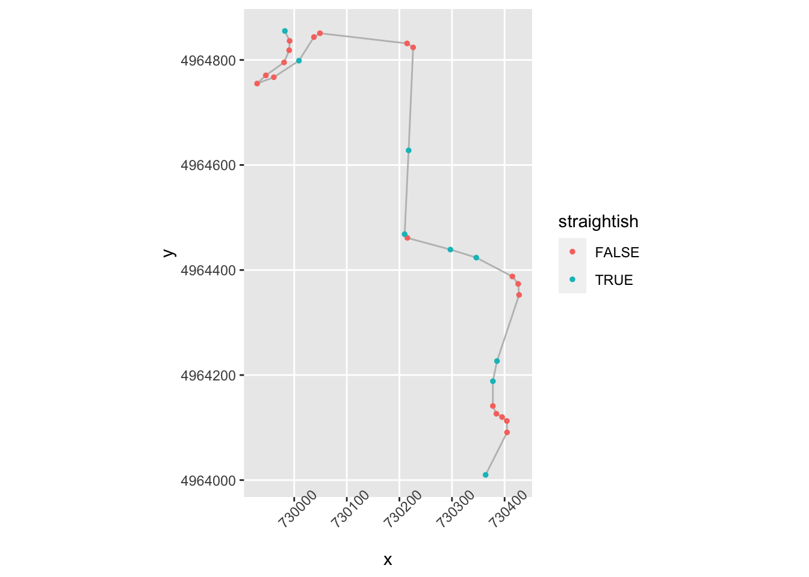
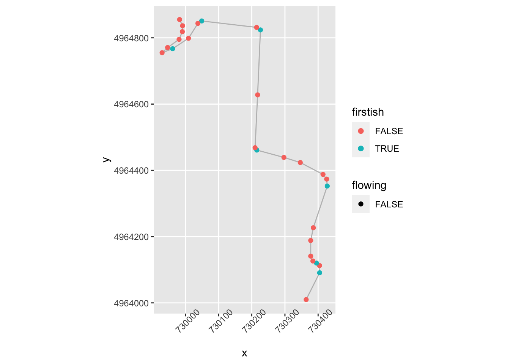
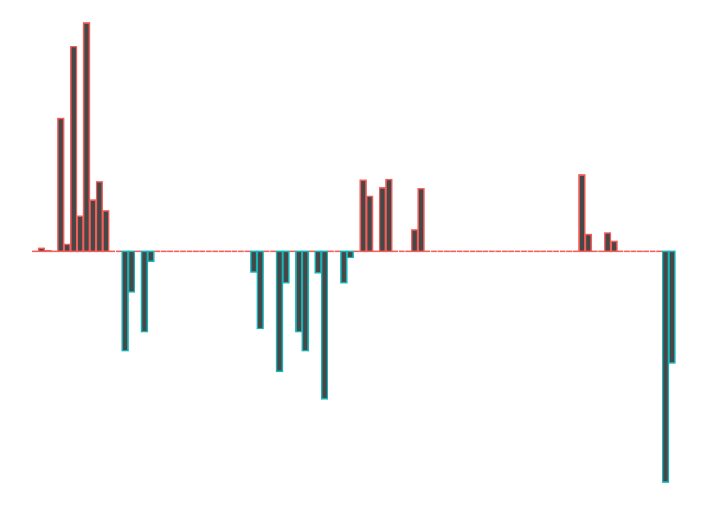
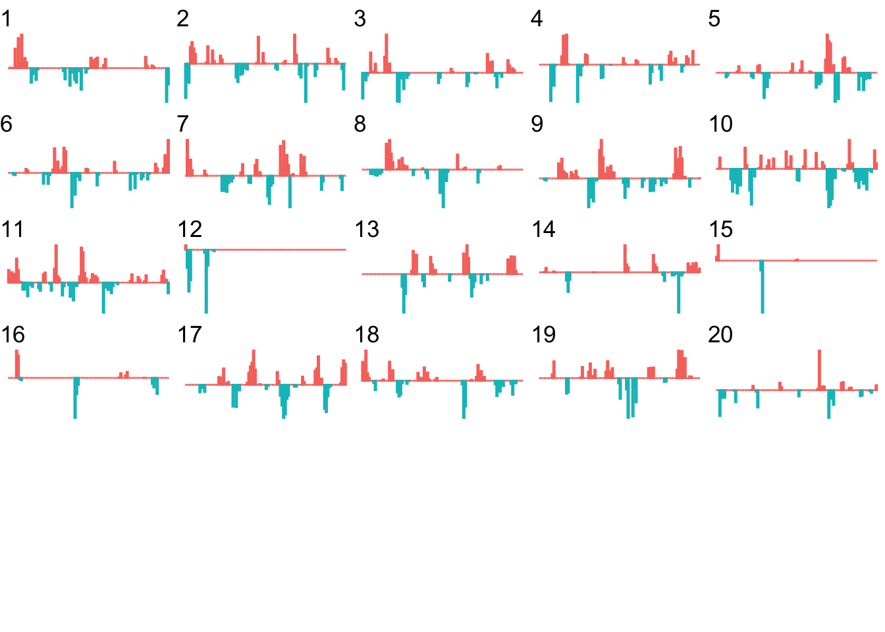

20 Automatically Generating Stage Descriptions
Having annotated each line segment that makes up a rally stage route, can we use that information to help us create visual or even written, descriptions of a stage?
In terms of categorising turns in a way that’s meaningful in a rally context, let’s have a recap on what sorts of thing a rally navigator or co-driver is likely to be saying:
embed_url("https://www.youtube.com/watch?v=KFjRj25uclQ")And let’s review what we actually mean by a corner…
embed_url("https://www.youtube.com/watch?v=YXOYckDATWE")In terms of actual corners, the convexity interesting may be one of the more interesting properties. Finding a good way of representing variable radius turns (you did watch the “corners” video, didn’t you?!) will also be important if we want to be able to identify “tightens” or “lessens” corner features. Any elevation changes in the vicinity of a corner are likely to be important if we are trying to characterise braking zone requirements…
20.1 Jemba Inertia Notes System
In a section entitled Using data to assess the suitability of a special stage, the FIA Rally Safety Guidelines 2020 suggest that as well as using historic information, the “Jemba System” for recording terrain data, including “the inclines, the dips, the bends and crests”. By also taking the road terrain (for example, gravel or asphalt) into account, and likely car classes, average speeds over the stage as well as highest speed and heaviest braking areas can also be determined. THe system can also report the margin for critical braking dist before stop (“how far you may carry on at competitive speed until you have to start braking to be able to stop at the stop control”) and the Jemba Safety Index (J/kg), the average kinetic energy of a car going through the corners.
The FIA Safety Guidelines illustrate how speeds might be visualised over a Google Earth map using a three colour scale (purple:over 150kph; red: over 90kph; yellow – 7590kph). The report also suggests that the Jemba system can predict the maximum cornering speed for any particular bend.
A Wikipedia page describing the Jemba Inertia Notes System gives examples of the descriptive and numerical labels that the Jemba system can generate as it converts odometry and accelerometer data into something rather more human understandable. A visual grading shows how descriptive labels correspond to turn angle.
{kind=link}
20.2 Generating Stage Descriptions
Being able to display route profiles on a map as colour highlighted routes is very useful and could be made more so adding the data to a leaflet.js extension such as Leaflet.Heightgraph, which displays arbitrary traces (to integrate this in the current workflow properly would require the development of an extension to the R leaflet package).
Another possibility would be to try to automate the creation of text based route descriptions (“robot journalism”), which I’ve crudely explored in other contexts elsewhere. The It Gets Faster Now blog publishes stage descriptions for WRC stage routes, so this could be a good place to learn tropes from.
20.3 Load in Base Data
As ever, let’s load in our stage data and the elevation raster and create a demo map:
library(sf)
library(raster)
library(rayshader)
geojson_filename = 'montecarlo_2021.geojson'
geojson_sf = sf::st_read(geojson_filename)## Reading layer `montecarlo_2021' from data source `/Users/tonyhirst/Documents/GitHub/visualising-rally-stages/montecarlo_2021.geojson' using driver `GeoJSON'
## Simple feature collection with 9 features and 2 fields
## geometry type: LINESTRING
## dimension: XY
## bbox: xmin: 5.243488 ymin: 43.87633 xmax: 6.951953 ymax: 44.81973
## geographic CRS: WGS 84stage_route_gj = geojsonio::geojson_json(geojson_sf[1,]$geometry)
# Previously downloaded TIF digital elevation model (DEM) file
stage_tif = "stage_elevation.tif"
# Load in the previously saved image raster
elev_img = raster(stage_tif)
# Note we can pass in a file name or a raster object
elmat = raster_to_matrix(stage_tif)## [1] "Dimensions of matrix are: 382x565."demo_map = elmat %>%
sphere_shade(texture = "desert",
progbar = FALSE)Let’s also get a UTM projection of the stage routes:
# Detect the UTM zone as an EPSG code
lonlat2UTMzone = function(lonlat) {
utm = (floor((lonlat[1] + 180) / 6) %% 60) + 1
if(lonlat[2] > 0) {
utm + 32600
} else{
utm + 32700
}
}
get_utm_projection = function(routes){
# Keep track of the original proj4 string
old_crs = st_crs(geojson_sf[1,])$proj4string
sample_location_x = st_coordinates(st_centroid(routes[1,]))[1]
sample_location_y = st_coordinates(st_centroid(routes[1,]))[2]
# Generate a new projection in the appropriate UTM zone
crs_zone = lonlat2UTMzone(c(sample_location_x,
sample_location_y))
new_proj4_string = st_crs(crs_zone)$proj4string
# Transform the route to the UTM projection
utm_routes = st_transform(geojson_sf, crs=new_proj4_string)
utm_routes
# Or should we returned a named list
# e.g. including the original projection?
#list(utm_routes = utm_routes, orig_crs=old_crs)
}
utm_routes = get_utm_projection(geojson_sf)20.4 Identifying Corners Based on trajr Step Gradients
Let’s start by trying to identify straight sections. Trivially, given that the stage route is given by a linestring made of straight line segments arranged at different angles relative to each other, every line segment is a straight. So what we really mean by a straight is a sequence of connected lines segments where each line segment is at an angle less than +/- 5 degrees to the to segment before it, for example, where the start of the straight has a preceding segment more than +/- 5 degrees to it (for example) and the end of the straight has a following line segment at more than +/- five degrees to it.
Let’s use the trajr stepangle to try to categorise straights:
library(trajr)
trj <- TrajFromCoords(as.data.frame(st_coordinates(utm_routes[1,])))
# displacement is a complex number, so we can get the actual distance:
trj$distance = Mod(trj$displacement)
# Find the accumulated distance at each step
trj$cum_dist = cumsum(trj$distance)
# Step angle in radians relative to previous
trj$stepangle = c(NA, TrajAngles(trj, compass.direction = NULL) * 180 / pi, NA)
trj$cumstepangle = cumsum(c(0, TrajAngles(trj, compass.direction = NULL) * 180 / pi, NA))
trj$stepheading = c(TrajAngles(trj, compass.direction = 0)* 180 / pi, NA)
# Find the gradient of the accumulated angle
trj$step_gradient = pracma::gradient(trj$cumstepangle, trj$cum_dist)We can view the gradients:
g = ggplot(data=trj,
aes(x=x, y=y)) + geom_path(color='grey') + coord_sf()
g + geom_point( size=0.2, color='blue',
data=trj[trj$step_gradient>0.2,]) +
geom_point(size=0.2,
data=trj[trj$step_gradient<=-0.2,],
color='red')If we have several consecutive points with a gradient of the same sign, then we might consider them to be part of the same corner, albeit one that maybe tightens or lessens. If the gradients of consecutive segments have a different sign, then we have a change of direction from e.g. left to right or right to left.
We can create a flag that identifies when the sign changes across consecutive rows of the step_gradient column. We can check this by lagging the contents of the step_gradient column by one step using the dplyr::lag() function and comparing its sign to the sign of the unlagged value. If we then dplyr::lead() the result, we can see if a change in direction happens at the end of a step:
trj = trj %>%
mutate(dirChange = lead(sign(step_gradient) != sign(lag(step_gradient))))
head(trj[,c('step_gradient', 'dirChange')])## step_gradient dirChange
## 1 0.02722146 FALSE
## 2 0.43059007 FALSE
## 3 1.18714584 FALSE
## 4 1.94367547 FALSE
## 5 1.42337267 TRUE
## 6 -0.07676768 FALSELet’s plot points on the route where we seem to have a direction change:
g +
geom_point( size=0.2, color='blue',
data=trj[trj$dirChange,]) +
theme(axis.text.x = element_text(angle = 45)) Let’s zoom in a bit:
Let’s zoom in a bit:
# Zoom in on part of the route
zoom1 = trj$y>4964000 & trj$y<4965000
g1 = ggplot(data=trj[zoom1, ],
aes(x=x, y=y)) + geom_path(color='grey') + coord_sf()
g1 + geom_point( size=0.2, color='blue',
data=trj[zoom1 & trj$dirChange,]) +
theme(axis.text.x = element_text(angle = 45))We notice that we seem to be missing some corners that are perhaps not direction changes, but significant angle changes in the same direction. And we also notice a direction change flagged in what appears to be the middle of a straight.
Let’s look at the apparent turn in the middle of the straight first. If we have opposing angles from one segment to the next, then we currently class the first point as a corner because the direction has changed. But we aren’t really interested in slight direction changes or even slight direction changes in the same direction.
slight_gradient = 0.35
trj = trj %>%
mutate(straightish = (abs(step_gradient) < slight_gradient))
ggplot(data=trj[zoom1, ],
aes(x=x, y=y)) + geom_path(color='grey') + coord_sf() +
geom_point( size=1, aes(color = straightish)) +
theme(axis.text.x = element_text(angle = 45))
We now want to identify the first node in a close sequence of nodes that identify a turn that doesn’t change direction.
Which is to say we want a not straightish node whose next node is nearby and not straightish and in the same direction, or not nearby:
# Close distance threshold
closeby = 25
trj = trj %>%
mutate(nearby = (distance < closeby) ) %>%
mutate(firstish = !straightish &
((nearby & !lag(straightish) & lag(dirChange)) |
(!nearby) ) )
ggplot(data=trj[zoom1, ],
aes(x=x, y=y)) + geom_path(color='grey') + coord_sf() +
geom_point( size=1, aes(color = firstish)) +
theme(axis.text.x = element_text(angle = 45))That’s identifying some of the corners, but what’s going on top left?
zoom2 = zoom1 & trj$x<730100
ggplot(data=trj[zoom2,],
aes(x=x, y=y)) + geom_path(color='grey') + coord_sf() +
geom_point( size=1, aes(color = firstish)) +
theme(axis.text.x = element_text(angle = 45)) Ah, ok, maybe we could categorise those as turns, but perhaps gentle ones. We maybe need to flag these as “flowing” if they aren’t too tight and have a long run in and out:
Ah, ok, maybe we could categorise those as turns, but perhaps gentle ones. We maybe need to flag these as “flowing” if they aren’t too tight and have a long run in and out:
tight_gradient = 0.5
trj = trj %>%
mutate(significant = abs(step_gradient) > tight_gradient ) %>%
mutate(flowing = !nearby & !lead(nearby) &
!straightish & !significant )
ggplot(data=trj[zoom2,],
aes(x=x, y=y)) + geom_path(color='grey') + coord_sf() +
geom_point( size=3, aes(color = flowing,
shape = dirChange)) +
theme(axis.text.x = element_text(angle = 45))
And how about over a wider part of the stage?
ggplot(data=trj[zoom1, ],
aes(x=x, y=y)) + geom_path(color='grey') + coord_sf() +
geom_point( size=2, aes(color = firstish,
shape = flowing)) +
theme(axis.text.x = element_text(angle = 45))
We could also then create a !flowing & firstish flag to provide better indexing of the starts of corners.
We’d need to test the approach on further stages to see whether it gives false positives or false negatives on identifying various corners, and we’d maybe also want to try to identify tightens and lessens.
Let’s have a go at tightens. At a first approximation, a corner tightens if a node isn’t firstish, is above a certain gradient, is close to the previous step and the magnitude of the gradient has increased and is the same sign as the previous step:
trj = trj %>%
mutate(tightens = !firstish & significant & lead(nearby) &
((sign(lead(step_gradient))==sign(step_gradient)) & (abs(lead(stepangle)) > abs(step_gradient))))
ggplot(data=trj[zoom1, ],
aes(x=x, y=y)) + geom_path(color='grey') + coord_sf() +
geom_point( size=2, aes(color = tightens,
shape = firstish)) +
theme(axis.text.x = element_text(angle = 45)) The corner lessens if a node isn’t firstish, is above a certain gradient, is close to the previous step and the gradient is in the same direction and has decreased:
The corner lessens if a node isn’t firstish, is above a certain gradient, is close to the previous step and the gradient is in the same direction and has decreased:
trj = trj %>%
mutate(lessens = !firstish & significant & lead(nearby) &
((sign(lead(step_gradient))==sign(step_gradient)) & (abs(lead(stepangle)) < abs(step_gradient))))
ggplot(data=trj[zoom1, ],
aes(x=x, y=y)) + geom_path(color='grey') + coord_sf() +
geom_point( size=2, aes(color = lessens,
shape = firstish)) +
theme(axis.text.x = element_text(angle = 45))We might also try for “continues” if the angle is about the same gradient but not tightening.
20.4.1 Numbering Corners
To make it easier to refer to corners, can we use the firstish flag as a way of counting corners?
trj_corners = trj[trj$firstish,]
trj_corners$corner_num = cumsum(trj_corners$firstish)
zoom1_corners = trj_corners[trj_corners$y>4964000 & trj_corners$y<4965000,]
ggplot(data=trj[zoom1, ],
aes(x=x, y=y)) + geom_path(color='grey') + coord_sf() +
geom_text(data= zoom1_corners,
aes(x=x, y=y, label=corner_num),
size=3) +
theme(axis.text.x = element_text(angle = 45))
20.5 Categorising Corners Using rLFT Convexity
The previous approach works to a certain extent with the limited dataset we tested it against but it feels rather contrived. Generally, just by looking at a curve we get a feel for how tight it is, rather than having to apply all sorts of decision-making rules and logical reasoning. Is there a simple metric we can use?
One approach might be to consider using convexity measure, such as the one provided by the rLFT package. Let’s see how that might work using the rLFT::bct() (bounded convexity tool) function. This function finds the curvature at regular points along a track, in the following example, every 10 meters:
library(rLFT)
stepdist = 10
window = 20
route_convexity <- bct(utm_routes[1,],
# distance between measurements
step = stepdist,
window = window, ridName = "Name")## user system elapsed
## 0.187 0.069 0.257
## [1] "Features skipped due to size: "
## logical(0)head(route_convexity)## FID RID MidMeas WindowSize RawConvexity ConvexityIndex Sinuosity Midpoint_X
## 1 1 SS 1 10 20 0.000 0.000 0.500 729181.8
## 2 1 SS 1 20 20 -0.040 -0.004 0.500 729186.1
## 3 1 SS 1 30 20 -0.014 -0.001 0.500 729190.4
## 4 1 SS 1 40 20 0.000 0.000 0.500 729194.6
## 5 1 SS 1 50 20 -1.739 -0.174 0.509 729198.8
## 6 1 SS 1 60 20 -0.093 -0.009 0.501 729199.6
## Midpoint_Y
## 1 4957667
## 2 4957676
## 3 4957685
## 4 4957694
## 5 4957703
## 6 4957713Recalling the previous chapter:
corner_conv = 0.1
tight_corners = route_convexity[abs(route_convexity$ConvexityIndex)>corner_conv,]
tight_corners_zoom1 = tight_corners$Midpoint_Y>4964000 & tight_corners$Midpoint_Y<4965000
ggplot(data=trj[zoom1, ],
aes(x=x, y=y)) + geom_path(color='grey') + coord_sf() +
geom_text(data=tight_corners[tight_corners_zoom1,],
aes(label = ConvexityIndex,
x=Midpoint_X, y=Midpoint_Y),
size=2) +
geom_point(data=tight_corners[tight_corners_zoom1,],
aes(x=Midpoint_X, y=Midpoint_Y,
color= (ConvexityIndex>0) ), size=1) +
theme_classic()+
theme(axis.text.x = element_text(angle = 45))So the absolute convexity index can help us find corners but we still need to do some work to find find the start of a corner.
How does that top right area look?
tight_corners_zoom2 = tight_corners_zoom1 & tight_corners$Midpoint_X<730100
ggplot(data=trj[zoom2,],
aes(x=x, y=y)) + geom_path(color='grey') + coord_sf() +
ggrepel::geom_text_repel(data=tight_corners[tight_corners_zoom2,],
aes(label = ConvexityIndex,
x=Midpoint_X, y=Midpoint_Y),
size=3) +
geom_point(data=tight_corners[tight_corners_zoom2,],
aes(x=Midpoint_X, y=Midpoint_Y,
color= (ConvexityIndex>0) ), size=1) +
theme_classic()+
theme(axis.text.x = element_text(angle = 45)) So we can probably apply a similar logic to previously to group these and identify the corner entry node, although we need to tweak the rules slightly so that we are identifying a corner entry node that is far from a previous tight corner node:
So we can probably apply a similar logic to previously to group these and identify the corner entry node, although we need to tweak the rules slightly so that we are identifying a corner entry node that is far from a previous tight corner node:
cornerer = function (df, slight_conv=0.01, closeby=25){
df %>%
mutate(dirChange = sign(ConvexityIndex) != sign(lag(ConvexityIndex))) %>%
mutate(straightish = (abs(ConvexityIndex) < slight_conv)) %>%
mutate(dist = (lead(MidMeas)-MidMeas)) %>%
mutate(nearby = dist < closeby) %>%
mutate(firstish = !straightish &
((nearby & !lag(straightish) & lag(dirChange)) |
# We don't want the previous node nearby
(!lag(nearby)) ) & !lag(nearby) )
}
tight_corners = cornerer(tight_corners)Let’s see how it looks. We can also label nodes showing how far away the next node is:
ggplot(data=trj[zoom1,],
aes(x=x, y=y)) + geom_path(color='grey') + coord_sf() +
ggrepel::geom_text_repel(data=tight_corners[tight_corners_zoom1,],
aes(label = dist,
x=Midpoint_X, y=Midpoint_Y),
size=3) +
geom_point(data=tight_corners[tight_corners_zoom1,],
aes(x=Midpoint_X, y=Midpoint_Y,
color= (firstish) ), size=1) +
theme_classic()+
theme(axis.text.x = element_text(angle = 45))20.6 Stage Segmenting
One of the handy things about the rLFT::bct() is that it can chunk the route into very short segments. This provides us with an easy way to index into the route to generate a view over a particular section.
For example, we can view the route over specific sections given a start and finish distance into the route. Note that the route will be discretised to step lengths used by the rLFT::bct() function and a stylised route will be approximated along step midmeasure points:
segment_plot = function(start, end, title='') {
# Create the route distance filter limits
segment_filter = route_convexity$MidMeas >= start &
route_convexity$MidMeas <= end
# Filter the route
route_segment = route_convexity[segment_filter,]
# Generate the stylised route plot
ggplot(route_segment) +
geom_path(aes(x=Midpoint_X, y=Midpoint_Y)) +
geom_point(data=head(route_convexity[segment_filter,],n=1),
aes(x=Midpoint_X, y=Midpoint_Y)) +
theme_void() +ggtitle(title)
}
# Show the first 1000m
segment_plot(0, 1000)
We can automate the creation of route sections every kilometer and create a list of plots, one per kilometer section:
segment_length = 1000
step_length=10
kms = floor(max(route_convexity$MidMeas)/segment_length)
# The final section goes to the end of the route
segment_multiplot = function(i, final=FALSE){
# Preface the start of the stage with a 20m lead
start_prefix = 2*step_length
start = segment_length*(i-1)-start_prefix
if (final)
end = Inf
else
end = (segment_length*i)
segment_plot(start, end, i)
}
# Create a list to hold each plot as a separate item
segment_plots = list()
# Iterate through each kilometer
for (i in 1:kms){
# Add each plot to the plot list
segment_plots[[length(segment_plots) + 1]] <-
segment_multiplot(i, final=(i==kms))
}We can now use the ggpubr::ggarrange() function to display all the stage route sections in a single plot:
library(ggpubr)
ggarrange(plotlist=segment_plots,
ncol=5, nrow=ceiling(kms/4))
We can use a similar approach to create a more general function that will allow us to plot either the route, or generate a plot for each segment showing the convexity against distance into the segment:
# Simple function to get a route segment
get_route_segment = function (route, start, end){
segment_filter = route$MidMeas >= start &
route$MidMeas <= end
route[segment_filter,]
}
segment_plot2 = function(route, start, end, title='',
typ='route', themevoid=TRUE){
# Get route segment
route_segment = get_route_segment(route, start, end)
# Create plot base
g = ggplot(route_segment)
if (typ=='convexity') {
g = g + geom_bar(aes(x=MidMeas,
y=-ConvexityIndex,
col=(ConvexityIndex>0)),
stat='identity', show.legend = FALSE)
} else {
# plot route
g = g + geom_path(aes(x=Midpoint_X, y=Midpoint_Y)) +
geom_point(data=head(route_convexity[segment_filter,], n=1),
aes(x=Midpoint_X, y=Midpoint_Y))
}
if (title!='')
g = g + ggtitle(title)
if (themevoid)
g = g + theme_void()
g
}Let’s see what a convexity report for the first kilometer looks like:
segment_plot2(route_convexity, 0, 1000, typ='convexity')
So we start off with a left (port-red-left!), a slight right, a straight, a right that tightens, a left, a straight, a nudge left and then end the kilometer with a tight right.
Let’s remind ourselves to see if that looks about right:
segment_plot2(route_convexity, 0, 1000, typ='route')We can use a similar approach before to automate the collection of multiple plots for each stretch of the stage:
segment_multiplot2 = function(route, i, final=FALSE, typ='route'){
start = segment_length*(i-1)-step_length
if (final)
end = Inf
else
end = (segment_length*i)
segment_plot2(route, start, end, i, typ )
}We can now generate a plot of either the route sections, or the convexity based on distance into the route section:
segment_plots2 = list()
# Iterate through each kilometer
for (i in 1:(kms-1)){
segment_plots2[[length(segment_plots2) + 1]] <-
segment_multiplot2(route_convexity, i, final= (i==kms),
typ = 'convexity')
}
ggpubr::ggarrange(plotlist=segment_plots2,
ncol=5, nrow=ceiling(kms/4))
At a glance, we can now start to identify segments of the route that contain particular sorts of feature.
For example, we can readily see that kilometers 12, 15 and 16 include significant straight stretches.